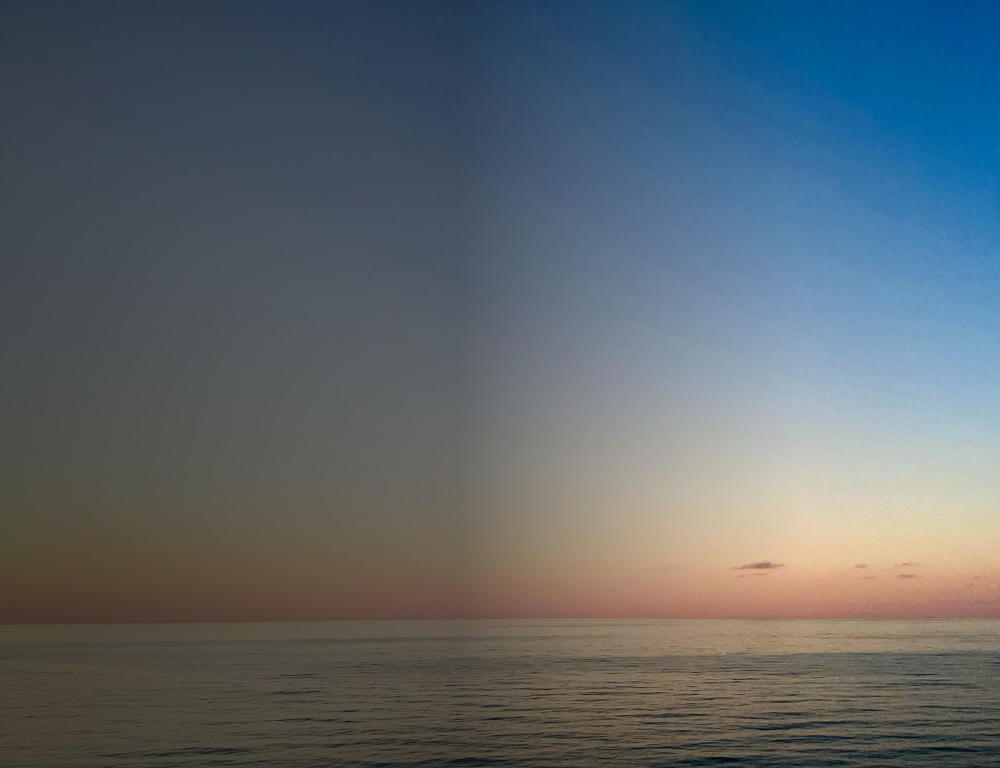

A quiet hub for your links
Calm surface. Clear focus. All your links.
A quiet hub for your Instagram, TikTok, and free web tools. Every link shared, kept effortless.
Fig. 0 — Dusk over the city.
ScrollFig. 1 — Dusk fading to paper. No picture and nothing pinned; the page stays still and the light does the work.
One place for everything you share.
Three ways in, zero clutter. Pick a platform, tap through, done.
How it flows.
From one link to wherever you need to go.
-
01
Connect
Pick a platform and tap through.
-
02
Explore
Stories, clips, and free tools, ready in one place.
-
03
Use
Sorted in seconds, no noise.
Fig. 2 — Three steps, no detours. The list reads left to right like a line of type.

No noise, no clutter. Just your links, working quietly.
That is the whole point of Newsocapis.
Everything, in one quiet link.
Instagram, TikTok, and free web tools, all reachable from a single place.
Open the toolsFig. 3 — Colophon. One address, three destinations, nothing else to maintain.